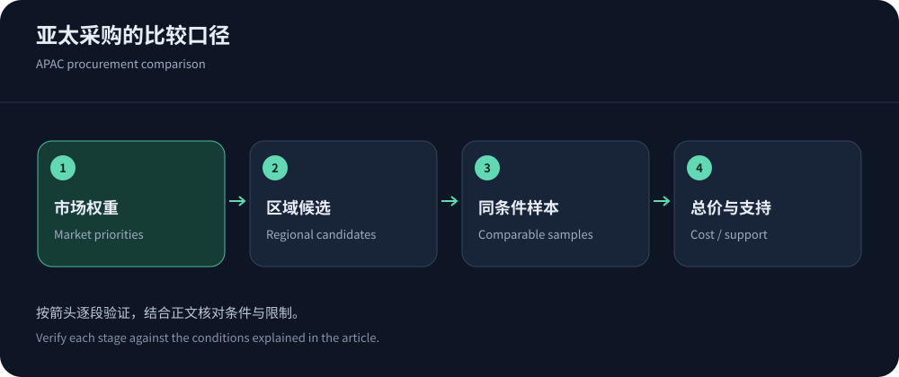
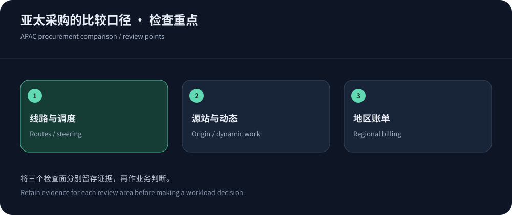

Start with the markets that matter
Global facility counts do not establish reliability on your audience networks. Segment countries, cities, carriers, devices and workflows; steering, interconnection, origins and cache determine the actual path.
This shortlist uses official material checked on 14 October 2026 without latency rankings. Evaluate CDN5 for relevant regional-security needs and other operating models for global/cloud workloads.
Five candidate directions and APAC checks
These candidates have evaluation questions rather than invented latency values. Confirm product, region, plan and contract scope.
| Candidate | Evaluate for | APAC focus |
|---|---|---|
| CDN5 | Regional delivery and Web protection bundles. | Actual regional resources, carrier samples and mitigation paths. |
| Cloudflare | Global proxy/cache/security management. | Market steering, entitlements, dynamic origins and mainland eligibility. |
| Amazon CloudFront | Existing AWS origins and operations. | Regional costs, cache, origin and fixed-plan scope. |
| Fastly | Edge control, invalidation and development workflows. | APAC delivery/request costs, media limits and support. |
| Google Cloud CDN | Existing Google Cloud ingress/origin architecture. | Delivery/fill/lookups/security; pricing does not imply pinned nodes. |


Validate paths through application behavior
Routes vary by carrier/time and direction. Traceroute and geolocation are clues, not complete evidence; correlate serving edge, HTTP, failures and origin logs. Contract route direction and change handling when required.
Separate connection/cache states, dynamic paths, protocols and IPv6. Use regional node selection rather than substituting one datacenter for mobile audiences.
Origin and content design change regional benefits
Regional edges can help cached content, while transactions still depend on origins/databases. More Asian PoPs do not relocate Western writes. Diagnose cross-region interactions before changing reuse, queries, safe read caching or origin placement, preserving consistency and data obligations.
Preserve price units and scope
Fastly lists initial paid delivery at $0.19/GB in Asia and $0.12/GB in North America/Europe, with allowances, requests/security and use conditions. Google CDN lists $0.09/GiB for first-tier APAC plus fill/lookups/resources. Units and scope differ.
CloudFront offers fixed/metered models; Cloudflare and CDN5 use other plan structures. Price equal workloads without inventing discounts or tax-inclusive totals.
Security policies need audience compatibility
Shared egress, mobile access and partner clients affect identity counters. Use trusted identities, routes and work cost rather than blanket geography blocks. Validate callbacks/SDKs and preserve language/currency isolation.
Prepare legitimate shared-egress, language and callback samples per market. Observe before enforcement and record false positives/rollback. High regional volume alone does not prove abuse.
Global service does not imply mainland eligibility
Cloudflare China Network has separate subscription/domain requirements. Offshore delivery and mainland nodes are distinct, and destination pricing may still mean offshore serving.
Review actual data processing, logs and dependencies by workload. Reassess contracts and eligibility when expanding markets rather than treating the initial regional label as permanent fit.
Turn pilots into operational standards
Preserve configuration, audience, window, samples and failures. Gate correctness, workflows, origin isolation, cost and support, retaining untested items until validated.
Scaling and exit belong in selection
Recheck fit when audiences, media, protocols or origins change. Preserve exports, TLS, allowlists and verified protected fallback. Two brands can share dependencies; multi-CDN is not automatically independent resilience.


Shortlist through hard requirements
Start with workload-matched candidates: CDN5 for relevant regional protection, cloud integration for existing platforms, or global steering/control for broad audiences. Support every choice with protocol, region and pilot evidence. See cost comparison and Hong Kong optimization.
Record regional samples and actual delivery shares rather than inferring annual costs from a small inexpensive subset.